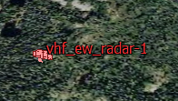
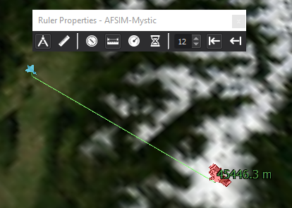
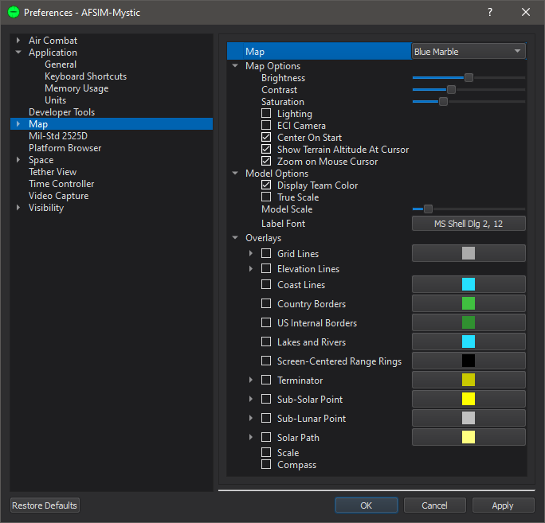
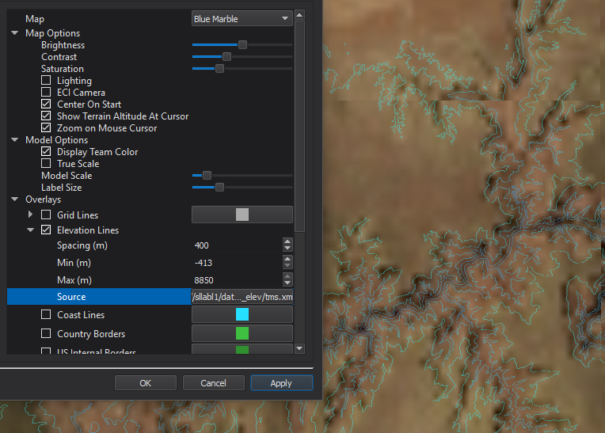
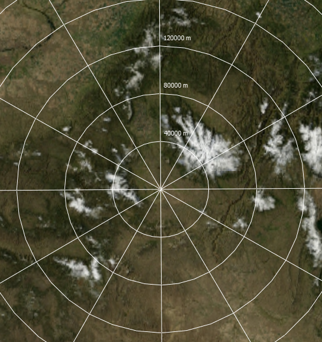
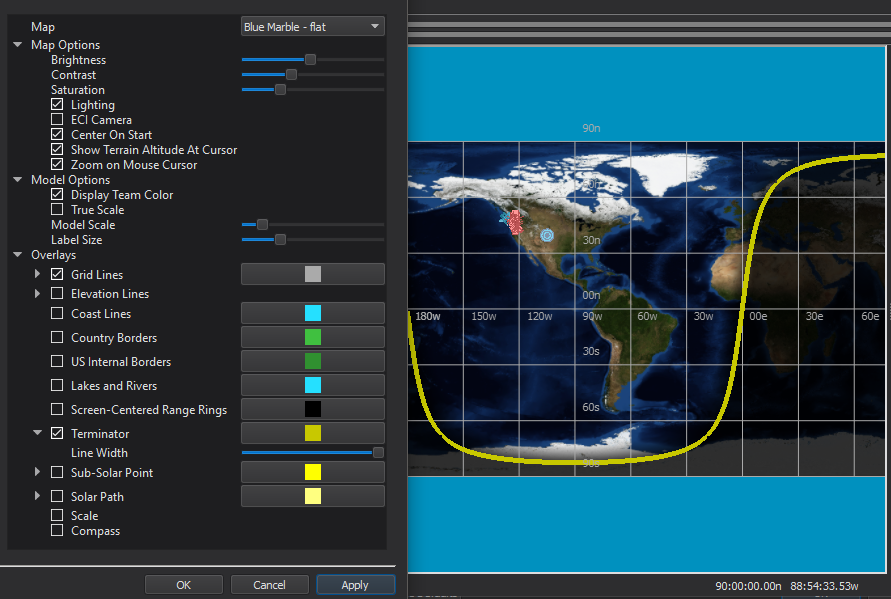
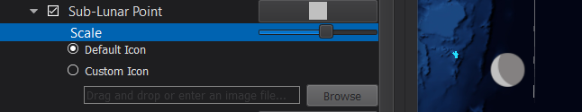
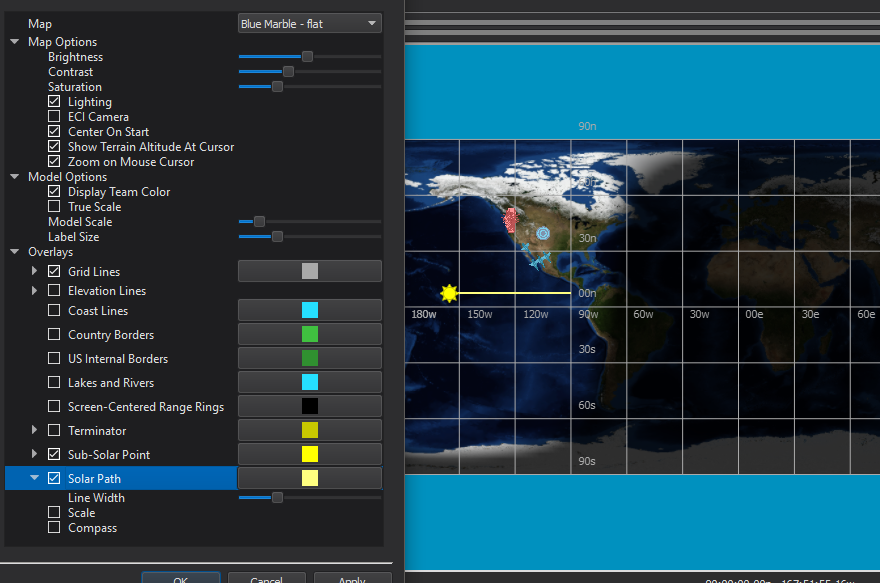
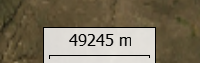
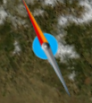

Map Display - Mystic¶
The Map Display dialog shows the world along with platforms, tracks, and other elements the user has chosen to display on the map.
To navigate the map:
Left-click-drag: ‘Pulls’ the map along with the mouse cursor.
Mouse-wheel: Zooms in and out towards the mouse cursor.
Double-left-click: Zooms the map into the mouse cursor.
Middle-click-drag: Tilts and rotates the view
Arrow-keys: Move the map
Home-key: Reset the map to center on the scenario.
Platforms may be selected by left clicking on them.
Many screen elements will pop-up additional information when the mouse cursor is hovered over them.
Right clicking on the map will open the map’s context menu. You may also right-click on platforms to open the platform’s context menu.
Platform Label Option¶
Labels displaying the platform’s name may be applied from the Platform Options dialog.
Measure tool¶
Measurements may be made by right clicking on a platform or location and choosing the measurement option from the menu and then clicking on another platform or location. Selecting the ruler will show the options dialog, and deselecting will hide it.

{kind=link}
{kind=link}
{kind=link}
{kind=link}
{kind=link}
{kind=link}
{kind=link}
Center on¶
Right clicking will provide an option to center the camera on the current selection or the entire scenario.
Follow¶
Right clicking on a platform will provide an option to have the camera follow the platform. Moving the camera with the mouse will end the following.
Preferences¶
Option |
Description |
|---|---|
Map |
Chooses the map to display. Maps can be added in the Map Definitions. |
Brightness, Contrast, Saturation |
Affects the color balance of the map. |
Lighting |
Enables lighting by the sun. |
ECI Camera |
Switches between an Earth-Centered-Earth-Fixed view and and Earth-Centered-Inertial view. |
Center on Start |
Centers the camera on the scenario at start-up. |
Show Terrain Altitude At Cursor |
Displays terrain altitude under the mouse cursor, when available, in the status bar. |
Zoom on Mouse Cursor |
When enabled zoom operations will be centered on the mouse cursor, when disabled they will be centered on the view center. |
Display Team Color |
Platform icons are either shaded with team colors or have the colors suppressed. |
True scale |
Draws platform icons to scale. |
Model scale |
Scales the models in screen space. |
Label font |
Sets the font applied to platform labels. (e.g. Platform Labels). |
Grid Lines |
Enable/disable latitude and longitude lines, and choose their color. The Density sub-option changes the density of grid lines. |
When associated with a TMS elevation database, enables terrain contour lines. |
|
Coast Lines |
Enable/disable and choose the color of coast lines. |
Country Borders |
Enable/disable and choose the color of country borders. |
US Internal Borders |
Enable/disable and choose the color of US state borders. |
Lakes and Rivers |
Enable/disable and choose the color of major lakes and rivers. |
Enables/disables and choose the color of screen centered range rings. |
|
Enables/disables a visualization of the terminator, the boundary between day and night. |
|
Enables/disables the visualization of the sub-solar point. |
|
Enables/disables the visualization of the sub-lunar point. |
|
Enables/disables a line representing the path of the sub-solar point over the course of the scenario. |
|
Enables/disables a scale tool. |
|
Enable/disable a compass tool. |
|
Tooltips |
Enable/disable tool tips when the mouse is hovered over a map element. |
Elevation Lines¶
When associated with a TMS elevation database, enables terrain contour lines. To select the elevation database, browse for the desired TMS file under ‘Source’.
Screen-Centered Range Rings¶
Enables/disables and choose the color of screen centered range rings.
Terminator¶
Enables/disables a visualization of the terminator, the boundary between day and night.
The line width and color may also be changed.
Sub-Solar Point¶
Enables/disables the visualization of the sub-solar point.
The point size, color, and icon may also be changed.

Sub-Lunar Point¶
Enables/disables the visualization of the sub-lunar point.
The point size, color, and icon may also be changed.
Solar Path¶
Enables/disables a line representing the path of the sub-solar point over the course of the scenario.
The line width and color may also be changed.
Scale¶
Enables/disables a scale tool.
Compass¶
Enable/disable a compass tool.
Other Features¶
Additional features are added to the map display: